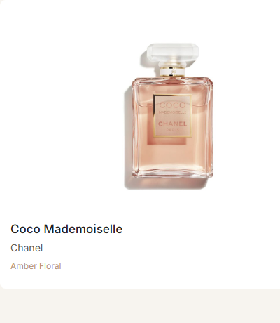
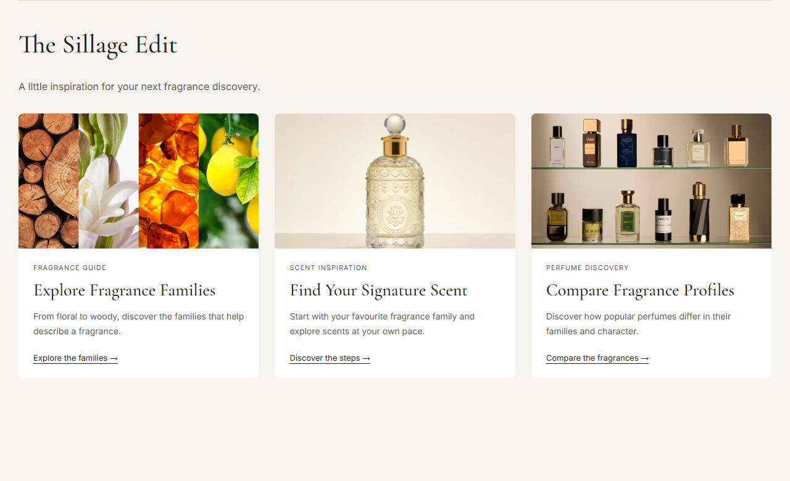
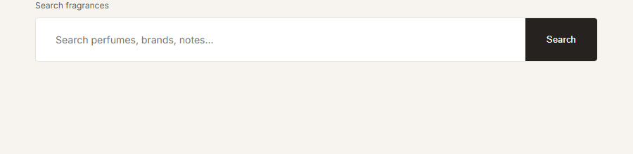
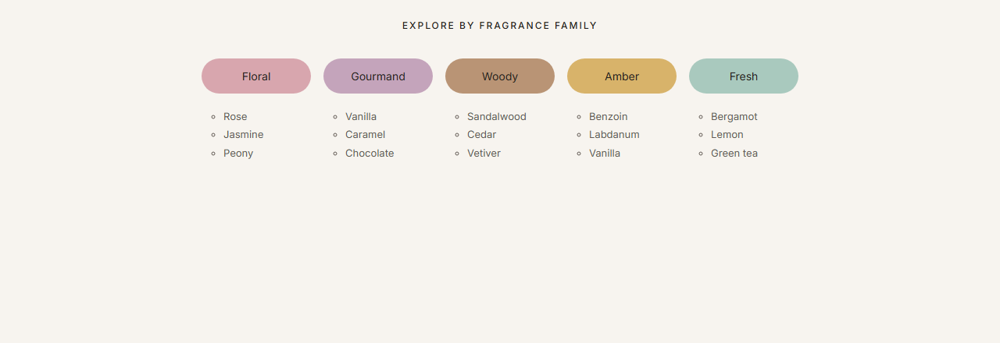
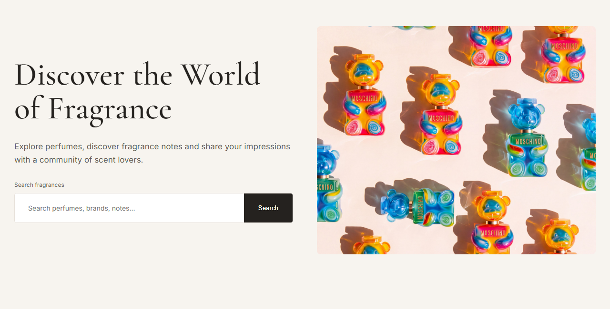

Тема, мета та місце розташування
Лабораторна робота №2 · Sillage
Тема: Каскадні таблиці стилів. Селектори тегу, класу, ідентифікатора. Стильове оформлення текстових елементів в HTML-документах.
Мета: Набути практичних навичок використання CSS-селекторів, оформлення шрифтів, тексту, фону, контурів, таблиць і багаторівневих списків; закріпити роботу із зовнішніми та внутрішніми відступами.
Об’єкт роботи: навчальний сайт парфумерної енциклопедії Sillage, створений засобами HTML5 і CSS3.
Приклади нижче збережено разом зі звітом: вони не залежать від подальших змін головної сторінки Sillage.
Способи підключення стилів
У index.html та about.html використано зовнішню таблицю стилів. Обидві сторінки отримують спільне оформлення з style.css.
<link rel="stylesheet" href="style.css">На початку CSS-файлу правило @import підключає шрифти Cormorant Garamond та Inter:
@import url('https://fonts.googleapis.com/css2?family=Cormorant+Garamond:wght@400;500;600&family=Inter:wght@400;500;600&display=swap');Інші способи: внутрішня таблиця стилів у тегу <style> та вбудовані стилі в атрибуті style. У Sillage для оформлення сторінок ці два способи не застосовуються.
Селектори класу
Клас можна призначити кільком елементам. Клас perfume-card повторно використовується для всіх карток каталогу; вкладені елементи мають власні правила.
HTML
<article class="perfume-card">
<div class="perfume-image">
<img src="images/chanel-coco-mademoiselle.jpg"
alt="Chanel Coco Mademoiselle perfume">
</div>
<h3>Coco Mademoiselle</h3>
<p class="brand">Chanel</p>
<p class="family-name">Amber Floral</p>
</article>CSS
.perfume-card {
background: white;
border-radius: 8px;
padding: 15px;
}
.perfume-image {
height: 285px;
background: #FFFF;
border-radius: 4px;
overflow: hidden;
}
.perfume-image img {
width: 100%;
height: 100%;
object-fit: contain;
}
.perfume-card h3 {
font-size: 17px;
font-weight: 500;
margin: 16px 0 8px;
}
.brand {
font-size: 14px;
color: var(--muted);
margin: 0 0 10px;
}
.family-name {
font-size: 12px;
color: var(--accent);
margin: 0 0 10px;
}
Селектори ідентифікаторів
Ідентифікатор має бути унікальним у межах документа. Селектор #sillage-edit додає верхню межу редакційному розділу. Його сітку й картки оформлюють класи.
HTML
<section class="sillage-edit" id="sillage-edit">
<div class="section-heading">
<h2>The Sillage Edit</h2>
</div>
<p class="edit-intro">A little inspiration for your next fragrance discovery.</p>
<div class="edit-grid">
<article class="edit-card">
<img src="images/families.webp"
alt="Wood, flowers, amber and citrus representing fragrance families"
width="1500" height="1000" loading="lazy">
<div class="edit-content">
<p class="edit-category">FRAGRANCE GUIDE</p>
<h3>Explore Fragrance Families</h3>
<p>From floral to woody, discover the families that help describe a fragrance.</p>
<a href="#notes">Explore the families →</a>
</div>
</article>
<article class="edit-card">
<img class="signature-image" src="images/ownscent.webp"
alt="Decorative glass perfume bottle on a beige background"
width="1600" height="1600" loading="lazy">
<div class="edit-content">
<p class="edit-category">SCENT INSPIRATION</p>
<h3>Find Your Signature Scent</h3>
<p>Start with your favourite fragrance family and explore scents at your own pace.</p>
<a href="#scent-finder">Discover the steps →</a>
</div>
</article>
<article class="edit-card">
<img src="images/profilesfr.png"
alt="A collection of perfume bottles arranged on two shelves"
width="1200" height="630" loading="lazy">
<div class="edit-content">
<p class="edit-category">PERFUME DISCOVERY</p>
<h3>Compare Fragrance Profiles</h3>
<p>Discover how popular perfumes differ in their families and character.</p>
<a href="#comparison">Compare the fragrances →</a>
</div>
</article>
</div>
</section>CSS
#sillage-edit {
border-top: 1px solid #DED8D0;
}
.edit-grid {
display: grid;
grid-template-columns: repeat(3, 1fr);
gap: 26px;
}
.edit-card {
background: white;
border-radius: 8px;
overflow: hidden;
}
.edit-card img {
display: block;
width: 100%;
height: auto;
aspect-ratio: 16 / 9;
object-fit: cover;
object-position: center;
}
.edit-card .signature-image {
object-position: center 65%;
}
.edit-content {
padding: 24px;
}
Інші селектори
Нижче наведено додаткові селектори, які застосовані до реальних елементів Sillage.
Дочірній селектор >
Вибирає лише безпосередній абзац усередині текстового блоку першого екрана.
<div class="hero-content">
<h1>Discover the World<br>of Fragrance</h1>
<p>
Explore perfumes, discover fragrance notes and share
your impressions with a community of scent lovers.
</p>.hero-content > p {
max-width: 720px;
margin: 0 0 30px;
color: var(--muted);
font-size: 17px;
line-height: 1.7;
}Сусідній селектор +
Оформлює абзац, який розташований одразу після заголовка h3 та має того самого батька.
<div class="edit-content">
<h3>Explore Fragrance Families</h3>
<p>From floral to woody, discover the families that help describe a fragrance.</p>
</div>.edit-card h3 + p {
color: var(--muted);
font-size: 14px;
line-height: 1.7;
margin: 14px 0 20px;
}Атрибутний селектор
Вибирає поле з атрибутом type="search" усередині пошукового блоку.
HTML
<form class="search-form" id="search" role="search">
<label for="perfume-search">Search fragrances</label>
<div class="search-box">
<input
type="search"
id="perfume-search"
name="query"
placeholder="Search perfumes, brands, notes..."
>
<button type="submit">Search</button>
</div>
</form>CSS
.search-box {
display: flex;
background: white;
border: 1px solid #E7E1DA;
border-radius: 5px;
overflow: hidden;
}
.search-box input[type="search"] {
flex: 1;
min-width: 0;
border: none;
padding: 22px 28px;
font-family: inherit;
font-size: 14px;
}
.search-box button {
border: none;
background: var(--text);
color: white;
padding: 0 30px;
cursor: pointer;
}
Універсальний селектор *
Застосовує border-box до всіх елементів: задані ширина та висота включають внутрішні відступи й рамку.
* {
box-sizing: border-box;
}Селектор нащадка та псевдокласи
.main-nav a вибирає посилання всередині меню на будь-якому рівні вкладеності. :hover реагує на наведення, а :focus-visible позначає фокус під час навігації клавіатурою.
.main-nav a {
font-size: 12px;
letter-spacing: 1px;
}.main-nav a:hover {
color: var(--accent);
}CSS: Шрифти, Текст, Таблиці, Фон, Контур, Списки
Шрифти й текст
Основний текст використовує Inter, заголовки — Cormorant Garamond. Задано розмір, насиченість, міжрядковий і міжлітерний інтервали.
body {
margin: 0;
background: var(--background);
color: var(--text);
font-family: 'Inter', sans-serif;
}.hero h1 {
font-family: 'Cormorant Garamond', serif;
font-size: 68px;
font-weight: 500;
line-height: 1.05;
margin: 0 0 30px;
}.edit-category {
color: var(--muted);
font-size: 11px;
letter-spacing: 1px;
margin: 0 0 12px;
}Фон і колір
Палітра зберігається у CSS-змінних кореневого елемента. Фон сторінки світлий, текст темний, другорядні написи мають приглушений колір.
:root {
--background: #F7F4EF;
--text: #25221F;
--muted: #625B54;
--accent: #B99475;
}.edit-intro {
color: var(--muted);
line-height: 1.7;
margin: 0 0 30px;
}Контури
Контур outline відображає фокус і не змінює розміри елемента, на відміну від рамки border. У прикладі пошуку вище можна натиснути Tab або перейти в поле, щоб перевірити фокус.
a:focus-visible,
button:focus-visible,
input:focus-visible {
outline: 2px solid var(--text);
outline-offset: -2px;
}.search-box:focus-within {
border-color: var(--text);
}Таблиці
Таблиця використовує border-collapse, padding, border-bottom, фон і вирівнювання тексту. Код і результат наведено в розділі «Селектори тегу». Контейнер дозволяє горизонтальне прокручування на вузькому екрані.
.table-wrapper {
overflow-x: auto;
margin-top: 35px;
}Багаторівневий список
Перший рівень містить п’ять сімейств ароматів. Кожен його елемент li містить вкладений список ul із трьома прикладами нот. Для вкладеного рівня задано круглі маркери, відступ, колір, розмір шрифту та міжрядковий інтервал.
HTML
<section class="families" id="notes">
<h2>EXPLORE BY FRAGRANCE FAMILY</h2>
<ul class="family-list">
<li>
<a href="#perfumes" class="floral">Floral</a>
<ul>
<li>Rose</li>
<li>Jasmine</li>
<li>Peony</li>
</ul>
</li>
<li>
<a href="#perfumes" class="gourmand">Gourmand</a>
<ul>
<li>Vanilla</li>
<li>Caramel</li>
<li>Chocolate</li>
</ul>
</li>
<li>
<a href="#perfumes" class="woody">Woody</a>
<ul>
<li>Sandalwood</li>
<li>Cedar</li>
<li>Vetiver</li>
</ul>
</li>
<li>
<a href="#perfumes" class="amber">Amber</a>
<ul>
<li>Benzoin</li>
<li>Labdanum</li>
<li>Vanilla</li>
</ul>
</li>
<li>
<a href="#perfumes" class="fresh">Fresh</a>
<ul>
<li>Bergamot</li>
<li>Lemon</li>
<li>Green tea</li>
</ul>
</li>
</ul>
</section>CSS
.family-list {
display: flex;
justify-content: center;
flex-wrap: wrap;
gap: 16px;
list-style: none;
padding: 0;
}
.family-list a {
display: block;
min-width: 140px;
padding: 14px 22px;
border-radius: 30px;
font-size: 14px;
text-align: center;
}
.family-list ul {
list-style-type: circle;
list-style-position: outside;
margin: 18px 0 0;
padding-left: 28px;
text-align: left;
color: var(--muted);
font-size: 13px;
line-height: 1.8;
}
.floral { background: #D8A6AE; }
.gourmand { background: #C4A4BB; }
.woody { background: #B99475; }
.amber { background: #D8B36A; }
.fresh { background: #A9C9BE; }
Зовнішні та внутрішні відступи
margin визначає відстань зовні елемента, padding — усередині. Картки мають внутрішні відступи, а заголовки й абзаци — зовнішні.
.edit-content {
padding: 24px;
}.edit-card h3 + p {
color: var(--muted);
font-size: 14px;
line-height: 1.7;
margin: 14px 0 20px;
}Оформлення головної сторінки
Перший екран перетворено на дві колонки: текст із пошуком ліворуч та фотографія Moschino праворуч. На екранах до 900 px вони розташовуються в одну колонку.
HTML
<section class="hero">
<div class="hero-content">
<h1>Discover the World<br>of Fragrance</h1>
<p>
Explore perfumes, discover fragrance notes and share
your impressions with a community of scent lovers.
</p>
<form class="search-form" id="search" role="search">
<label for="perfume-search">Search fragrances</label>
<div class="search-box">
<input
type="search"
id="perfume-search"
name="query"
placeholder="Search perfumes, brands, notes..."
>
<button type="submit">Search</button>
</div>
</form>
</div>
<img class="hero-image" src="images/toynew.jpg"
alt="Colourful Moschino perfume bottles shaped like teddy bears"
width="1650" height="2048">
</section>CSS
.hero {
display: grid;
grid-template-columns: 1fr 1fr;
align-items: center;
gap: 50px;
max-width: 1300px;
margin: 0 auto;
padding: 55px 30px 65px;
}
.hero-image {
display: block;
width: 100%;
height: 480px;
object-fit: cover;
border-radius: 8px;
}
.hero h1 {
font-family: 'Cormorant Garamond', serif;
font-size: 68px;
font-weight: 500;
line-height: 1.05;
margin: 0 0 30px;
}
Адаптивність
@media (max-width: 900px) {
.hero {
grid-template-columns: 1fr;
gap: 30px;
}
.edit-grid {
grid-template-columns: repeat(2, 1fr);
}
}
@media (max-width: 550px) {
.edit-grid {
grid-template-columns: 1fr;
}
}The Sillage Edit і фотографії
Після каталогу додано три редакційні картки з переходами до наявних розділів сайту. Фотографії мають єдине співвідношення сторін 16:9. Властивість object-fit: cover заповнює область із кадруванням без спотворення пропорцій. Для одиночного флакона кадр зміщено вниз за допомогою object-position.
.edit-card img {
display: block;
width: 100%;
height: auto;
aspect-ratio: 16 / 9;
object-fit: cover;
object-position: center;
}.edit-card .signature-image {
object-position: center 65%;
}Для зображень задано змістовні альтернативні описи. Пошук залишається навчальною HTML-формою: обробку запиту не реалізовано.
Контрольні питання
1. Для чого використовуються каскадні таблиці стилів?
CSS задає вигляд HTML-документа: кольори, шрифти, відступи, розташування елементів та адаптивне оформлення. Спільний файл стилів дозволяє узгоджено оформлювати кілька сторінок.
2. Які методи визначення стилів HTML-документа ви знаєте?
Зовнішня таблиця через link, внутрішня таблиця в style та вбудовані стилі через атрибут style. Правило @import також дозволяє підключати зовнішні таблиці стилів.
3. У чому різниця між каскадуванням і спадкуванням?
Каскадування визначає, яке значення властивості перемагає серед застосовних оголошень: враховуються походження й важливість, шари, специфічність та порядок правил. Спадкування передає дочірньому елементу значення успадковуваної властивості батька, якщо власне значення не задано. Наприклад, колір і шрифт зазвичай успадковуються, а відступи — ні.
4. Як оформлюються селектори тегу і класу?
Селектор тегу записується назвою елемента, наприклад table { width: 100%; }. Селектор класу починається з крапки: .perfume-card { padding: 15px; }. У HTML клас задається атрибутом class="perfume-card".
5. Для чого використовується ідентифікатор?
Атрибут id позначає унікальний елемент документа, дозволяє створювати якірні переходи та вибирати елемент у CSS через #. Приклад у Sillage: #sillage-edit.
6. Наведіть приклади оформлення текстових елементів.
font-family задає гарнітуру, font-size — розмір, font-weight — насиченість, color — колір, line-height — міжрядковий інтервал, text-align — вирівнювання, letter-spacing — міжлітерний інтервал.
Висновки
Під час виконання лабораторної роботи №2 було вдосконалено CSS-оформлення навчального WEB-застосунку Sillage. На практиці використано селектори тегу, класу, ідентифікатора, нащадка, дочірній, сусідній, атрибутний та універсальний селектори.
Опрацьовано оформлення шрифтів, тексту, фону, кольорів, рамок і контурів. Продемонстровано стилізацію таблиці порівняння, багаторівневого списку сімейств ароматів, зовнішні й внутрішні відступи.
До першого екрана додано фотографію, створено розділ The Sillage Edit із трьома картками, налаштовано адаптивні сітки та кадрування фотографій. Для інтерактивних елементів передбачено видимий фокус.
Результатом роботи стала узгоджено оформлена головна сторінка Sillage та звіт із прикладами HTML, CSS і відтворенням відповідних елементів у браузері.